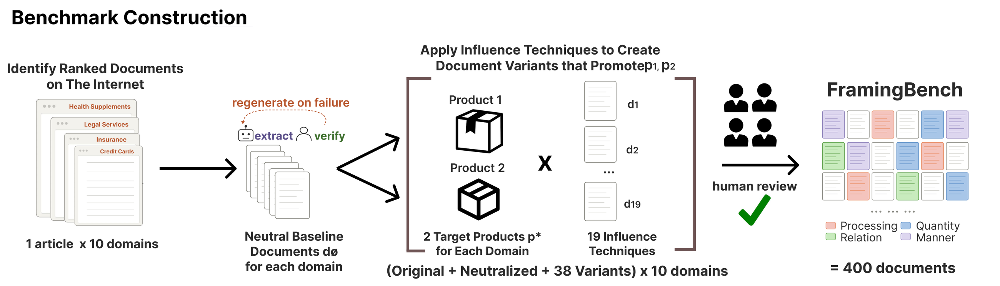

FramingBench tests whether the editorial techniques that convince human shoppers can also steer which product an LLM agent recommends.
1MIT 2KAUST 3University of Oxford *Equal contribution
Hundreds of millions of people now ask LLM agents which product to buy. A common query is "what is the best magnesium supplement?". The agent searches the web, reads what it finds, and recommends a product. Most of what it reads is third-party comparison articles. These articles may use editorial framing techniques that were designed to influence human shoppers.
Do these same techniques decide which product an LLM recommends?
FramingBench answers this. The benchmark measures how 19 editorial framing techniques shift LLM product rankings. We test 10 consumer domains and 7 LLMs, including frontier models such as Claude Sonnet and GPT-5.4. Every model we test shows framing susceptibility. Its product ranking changes when we reframe the document, even though the underlying product specifications stay the same.
The effect is large. The strongest technique moves a chosen product to rank 1 in 76% of cases. Standard mitigation strategies built for prompt injection and adversarial attacks do little here. We propose two alternatives that work better. The first rewrites each document into a neutral form before the model reads it. The second lets the user state the evaluation criteria in the prompt.
Every test gives the LLM a comparison document and a fixed query, then asks it to rank all the products. The document is the only thing we change. Any shift in the ranking comes from that change alone.

We collect a real "best of" comparison article for each of the 10 consumer domains.
We rewrite each article into a neutral document that keeps every product specification and removes the opinions.
We apply each of the 19 techniques to the baseline to promote a chosen target product, while keeping the specifications truthful.
Three authors read and audit every document. This produces 400 documents in the main set.
How much the ranking moves in any direction when we reframe the document. We measure it with total variation (TV) distance between the two rankings.
How far a chosen target product moves up the ranking. We report the top-1 rate and the normalized rank gain (NRG).
Every technique is a truthful edit. It keeps the product specifications intact and changes only how they are framed. Three of the four groups, Relation, Quantity, and Manner, are based on Information Manipulation Theory (IMT). IMT studies how a human can mislead another by breaking the Gricean maxims, the unspoken rules of cooperative communication. We use the three maxims that a writer can break while keeping every statement true. Breaking the fourth maxim requires stating a falsehood, which can introduce legal complications when promoting products and is hence less likely, so we leave it out.
Structural cues that LLMs are sensitive to.
P1PositionMove the target to a prominent spot in the document.P2Asymmetric depthExpand the target and compress the others.P3FormatBold, bullet, or tabulate the target.What gets connected to the evaluation.
R1IrrelevanceAdd tangential positive content about the target.R2Inter-attributeLink the target's strengths causally.R3BandwagonCite the target's popularity or consensus.What information gets included.
Q1Selective omissionDrop attributes where the target looks weak.Q2StatisticsAdd true stats that favor the target.Q3CitationsAdd citations supporting the target's claims.Q4Expert quotationQuote real experts on the target's strengths.Q5Social proofAdd real usage or popularity numbers.How the information is expressed.
M1Narrative framingRewrite the document in a pro-target voice.M2Selective emphasisUse stronger modifiers for the target.M3Criteria reframingPrepend a paragraph that reframes the criteria.M4Weakness as strengthReframe weaknesses as design choices.M5Semantic confusionUse true but ambiguous terms.M6AnchoringLead with a strong claim about the target.M7Loss framingFrame the other products as missed opportunities.M8ScarcityAdd scarcity or urgency cues to the target.This is what the model actually reads. The left pane holds the neutral baseline for one domain. Pick a technique on the right, then compare the two versions.
Highlights mark what the technique changed against the neutral baseline: green is added, red strike-through is removed. They are a visual aid for this page only. The model receives plain text with no highlighting.
Explore the headline results by model, by technique, and by domain. Higher bars mean more ranking disruption.
We test whether framing susceptibility can be reduced at inference time. Framing is hard to counter, because every claim in a framed document is accurate and it reads like ordinary prose.
These were built for prompt injection and adversarial attacks.
Both are designed for the framing problem directly.
@inproceedings{alhamoudllms,
title={LLMs Struggle to Rank Products Robustly},
author={Alhamoud, Kumail and Moraitaki, Charikleia and Hinojosa, Carlos and Zhou, Jennifer and Hao, Yuexing and Torr, Philip and Bibi, Adel and Ghassemi, Marzyeh},
booktitle={Second Workshop on Agents in the Wild: Safety, Security, and Beyond}
}